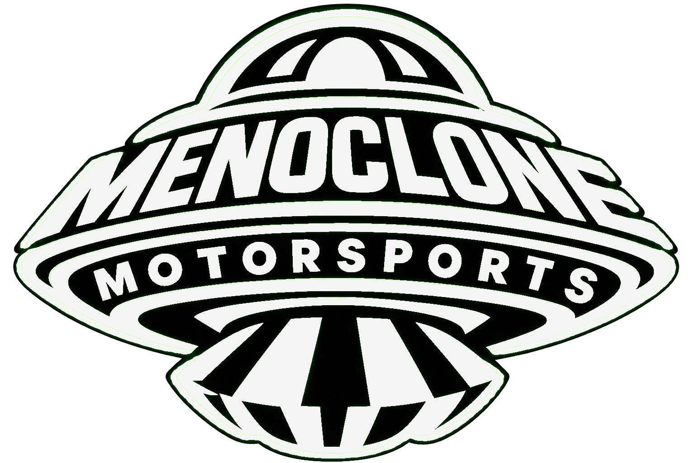
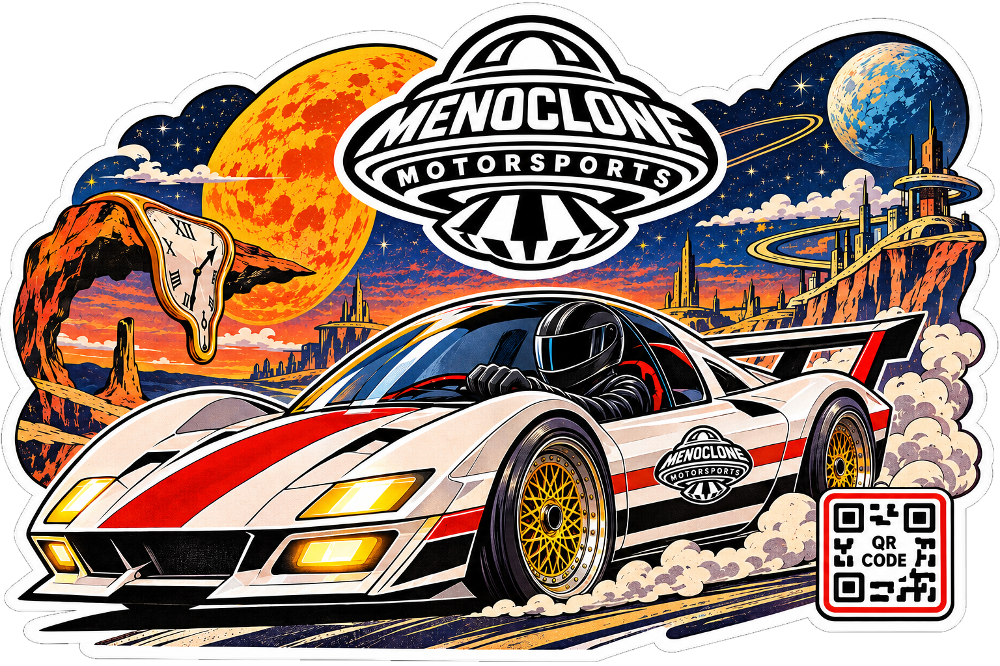
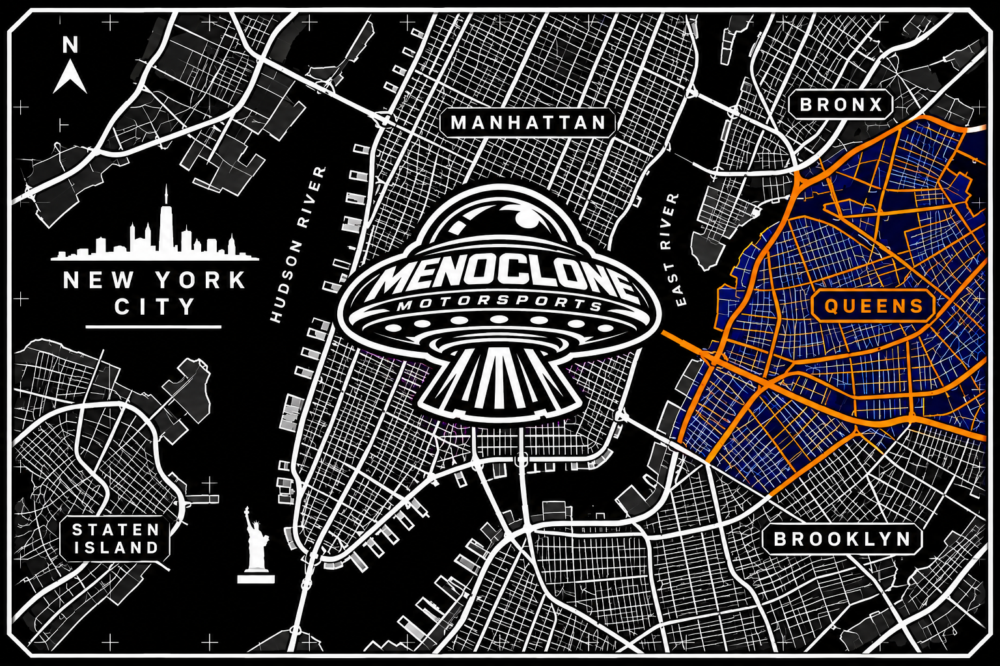
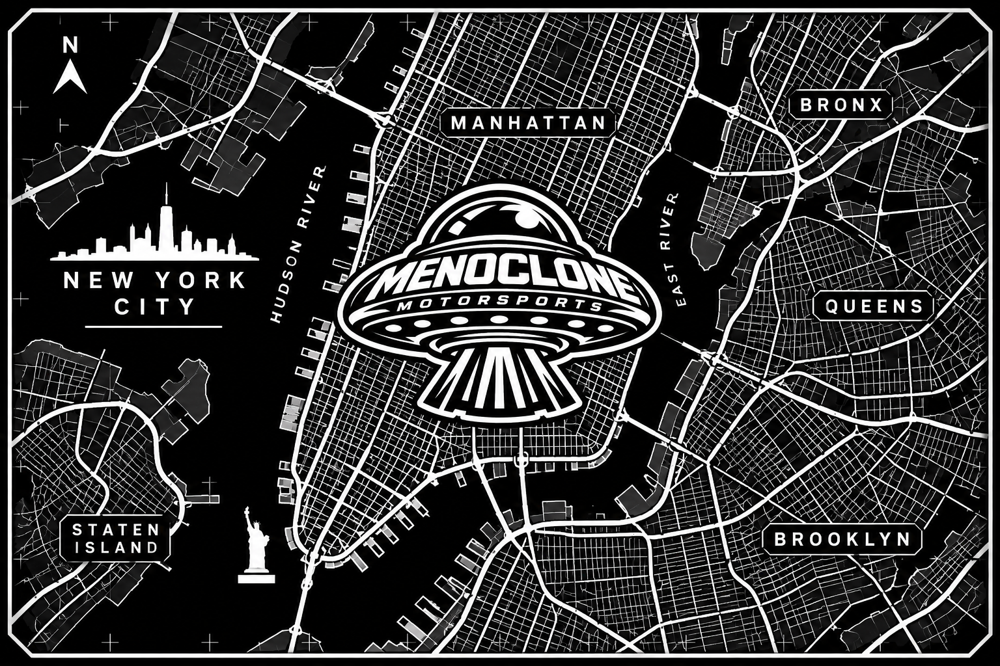
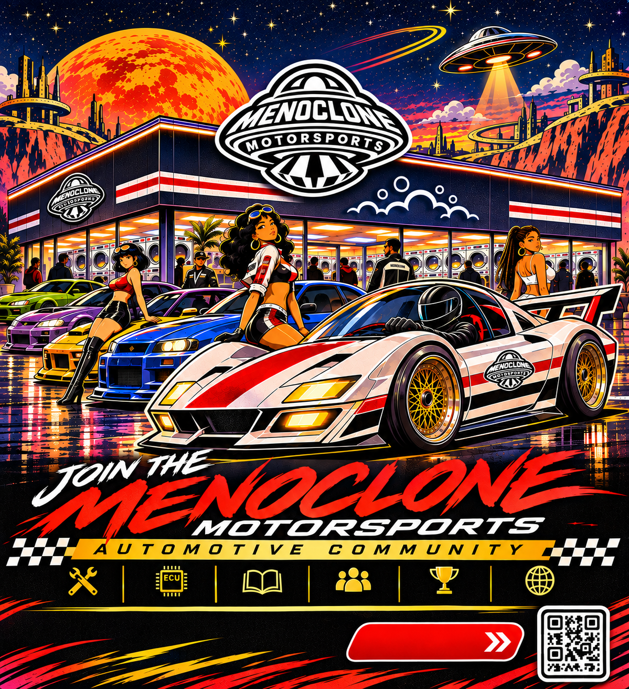

Safety First
Workshop orientation, personal protective equipment, tools, lifting practices, and hazard awareness.

An independent automotive journal and automotive workshop exploring diagnostics, electronics, craftsmanship, and the next generation of technicians. MENOCLONE Motorsports is building knowledge through practice, one skill at a time.

Our focus is not only the technology inside the car. It is the people willing to study it, service it, and build something better.
MENOCLONE Motorsports brings together automotive fundamentals, electrical systems, diagnostic tools, and hands-on learning. Our hardware projects grow alongside a training path built around safety, patience, and demonstrated skill.
A structured path for people who want to understand the automotive trade from the ground up.
Our developing apprentice program is centered on supervised learning, safe work habits, practical assessments, and a clear record of progress. Participants begin with fundamentals and advance only after demonstrating the skills required for the next task. Training opportunities and admissions are subject to shop capacity, qualified supervision, and program readiness.
Workshop orientation, personal protective equipment, tools, lifting practices, and hazard awareness.
Engine basics, maintenance, brakes, 12V electrical systems, and supervised diagnostic procedures.
Practical assessment, evaluator sign-off, and an internal certificate of skill completion.
Program documents and internal certificates record MENOCLONE training progress. They are not government-issued trade credentials or a guarantee of employment.
Explore our training documents and engineering editorials. These publications reflect current development work and will evolve as designs and training procedures are tested.
Follow the work as it happens. Engineering sessions, automotive tutorials, vehicle demonstrations, and conversations with the builders behind MENOCLONE Motorsports.
Our next session is taking shape.
Future broadcasts and replays will be featured here. No live stream is scheduled at this time; announcements will appear in our blog as dates and streaming channels are confirmed.
Upcoming broadcasts, live build sessions, community Q&A, and project milestones. Event details will be published as they are confirmed.
FOLLOW ANNOUNCEMENTS ↗Planned lessons on automotive fundamentals, vehicle electrical systems, safe testing, and OBD II diagnostics.
EXPLORE TRAINING ↗Recorded demonstrations and past sessions will appear here when published.
VISIT THE JOURNAL ↗Tap a location to raise its clock card and explore the local time and map. All six clocks update live and account for daylight saving time where applicable.
Time is displayed in each city's local time zone, with a UTC offset.
Automotive design, digital prototyping and exploration of innovative vehicle concepts.
Embedded electronics, vehicle diagnostics and connected automotive technology.
Advancing our studies and development to create thoughtful products for yesterday’s future.
From the first blinking LED to the complex language of vehicle networks, our boards are being developed to make electronics approachable and automotive technology more understandable. Explore two projects currently in development.

Start with the basics of circuits and build toward powerful prototypes. The MNC UNO R1 is envisioned as a hands on learning platform for coding, sensors, robotics, and embedded systems.
LED experiments, switches, sensor projects, small robots, motor control and early automotive electronics prototypes.
Specifications may change as the board progresses toward release.

A powerful direction for connected vehicle diagnostics. Designed around the ESP32-S3, this board concept explores how CAN networks and onboard diagnostics can provide meaningful insight into vehicle operation.
Read supported diagnostic trouble codes, monitor available live engine parameters, explore CAN traffic in controlled settings and connect data to future software dashboards.
Product specifications are subject to testing and refinement. Vehicle compatibility will be confirmed before release.

Founded in 1977 by Bodo Buschmann and Klaus Brackmann, BRABUS began with a vision for more individual and performance focused vehicles. Through distinctive bodywork, high performance engineering and bespoke interiors, the company helped show how customization can transform a vehicle into a personal expression of design and technical ambition.
At MENOCLONE Motorsports, we admire that willingness to question convention. We are inspired by the idea that automotive innovation can come from passionate builders who study, experiment and create something different.
Our own path centers on open source learning, accessible electronics, embedded systems and diagnostic tools. From the MNC UNO R1 to the MNC DIAG-01, we are exploring how creativity and practical engineering can open new doors for the next generation of makers.
We believe the future of automotive design is shaped by those willing to keep learning and keep building.
Independent inspiration only. MENOCLONE Motorsports is not affiliated with, endorsed by or partnered with BRABUS. Explore the BRABUS story ↗
As an open source focused engineering initiative, our development journey continues through study, experimentation and hands on engineering. From approachable learning tools to ambitious automotive interfaces, MENOCLONE Motorsports is building the knowledge and prototypes that can shape future products.
Explore the wider creative universe at MENOCLONE.com.
Explore our vision, product concepts, development roadmap, commercial hypotheses and opportunities for strategic collaboration.
Explore our private investor presentation. Access is reserved for invited partners.
Investor materials are confidential and available by invitation.
 INSPIRED BY OPEN SOURCE
INSPIRED BY OPEN SOURCEAt MENOCLONE Motorsports, we love being part of the open source community. We are inspired by the makers, developers, engineers, students, educators and curious minds who share ideas, solve problems together and help each other learn. Every useful tutorial, thoughtful code review and documented experiment can open the door for someone else to create something extraordinary.
We believe the best engineering journeys are shared. As we develop the MNC UNO R1 and MNC DIAG-01, we want to exchange knowledge, listen to feedback, celebrate contributors and make technical learning more approachable. Verified design files and specific open source licenses will be announced when ready.
Make room for beginners and experienced builders to ask questions and exchange knowledge.
Document our experiments, invite constructive feedback and publish verified resources when ready.
Support thoughtful collaboration and celebrate the people whose ideas help move engineering forward.
The MENOCLONE Motorsports Locator Card is our vision for connecting drivers, builders and automotive enthusiasts with a growing network of participating locations.
Inspired by New York City and our Queens roots, these membership concepts go beyond printed maps. We are exploring digital membership experiences, location discovery, community access and participating automotive location passes.

Our borough highlighted in vivid blue and orange. A visual starting point for a connected community of automotive enthusiasts.
MEMBERSHIP COLLECTION
A monochrome citywide edition celebrating the streets and communities that inspire MENOCLONE Motorsports.
MEMBERSHIP COLLECTION
MENOCLONE Motorsports is bringing import car enthusiasts together to exchange ideas, share knowledge, and explore new ways to innovate the automotive world. From tuning and design to diagnostics, electronics, and emerging technology, we want builders, drivers, and curious minds to help shape what comes next.
Our vision is a community where different perspectives inspire smarter projects, responsible experimentation, and stronger connections among import enthusiasts.
JOIN THE COMMUNITY ↗We are developing a membership experience designed around automotive discovery and participation. Planned features include access to a member locator, updates from participating auto locations and location-specific passes where partnerships are established.
Location passes and participating automotive locations will be announced as they become available.
Join a growing community of import car enthusiasts, future technicians, makers, engineers, and curious minds.
Bring your ideas on import cars, diagnostics, vehicle electronics, tuning, design, open source development, workshops, and the future of MENOCLONE Motorsports.
Be part of a community united by import cars, fresh ideas, and a shared passion for the road ahead.
Map loads when you select a location. · Open full map ↗
Maps provided by OpenStreetMap and require an internet connection.